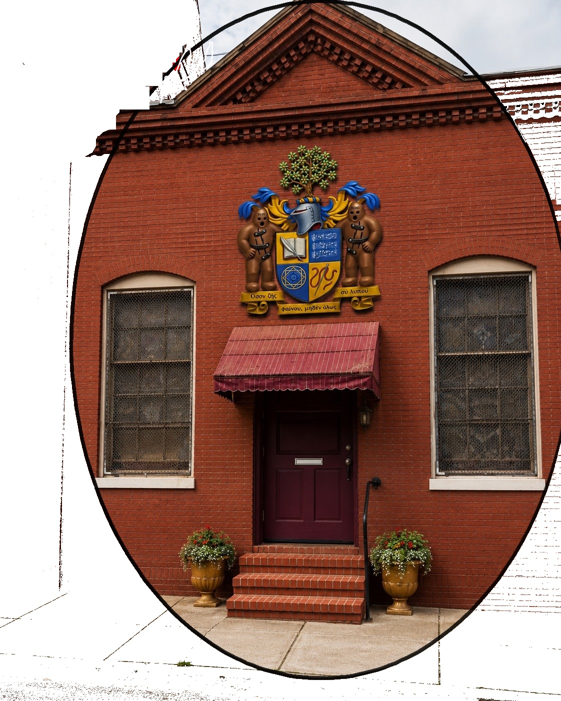

Preserving the sanctuary. Reimagining the future.
Pigtown Sanctuary is a preservation and adaptive-use vision for a historic Baltimore church space, centered on keeping the sanctuary intact as a place for music, performance, art, gathering, and community connection.

The idea
Keep the strongest part of the building alive: the sanctuary itself.
What it could become
Music and performance
A resonant sanctuary space for concerts, readings, small performances, rehearsals, and creative presentation.
Art and creative reuse
A place where preservation, making, design, and adaptive reuse can work together.
Community gathering
A warm, active, neighborhood-facing space for partnership, conversation, shared culture, and local connection.
Guiding principles
Connect
For questions, ideas, or potential partnership conversations, email pigtownsanctuary@gmail.com.
No final use, purchase, approval, or opening date is represented by this site. The project is exploratory and subject to professional review.